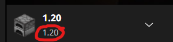
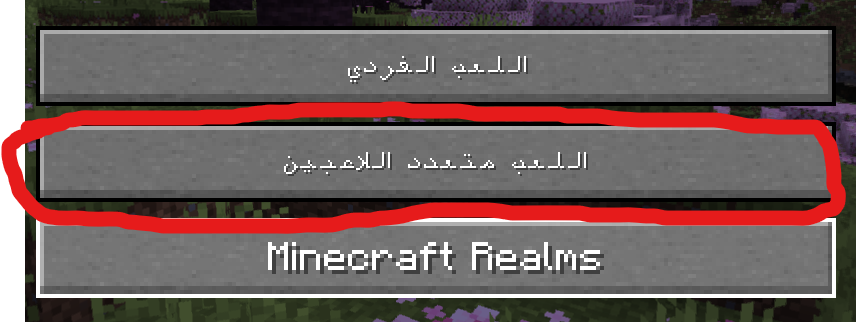
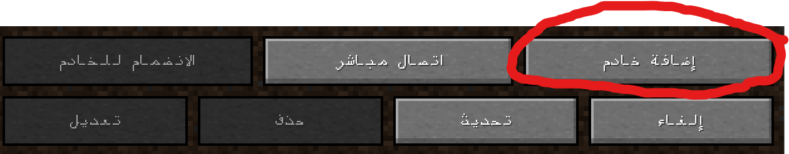
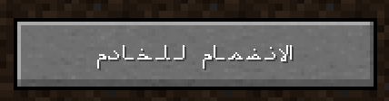

بيلد ذا ارث إسرائيل
كيفية الانضمام:
الخطوة 1: قم بتنزيل minecraft 1.20 وانقر فوق تشغيل. انقر فوق هذا إذا كنت بحاجة إلى معرفة كيفية تثبيت الإصدارات القديمة:كيفية تثبيت ماين كرافت 1.20
الخطوة 2: انقر فوق تعدد اللاعبين ثم انقر فوق إضافة خادم إذا لم تكن قد أضفت خدمتنا بالفعل.
 الخطوة 3: أضف خادمنا عن طريق كتابة عنوان IP التالي:

الخطوة 4: انضم إلى الخادم إما بالنقر فوق الانضمام إلى الخادم زر كما هو موضح أدناه ، أو انقر فوق السهم الرمادي على أيقونة الخادم.
